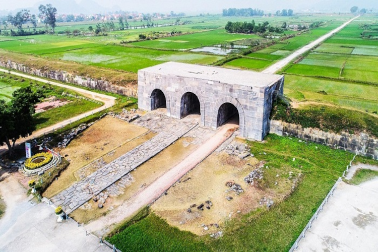

Trên bản đồ du lịch Thanh Hóa, bạn sẽ không thể bỏ qua điểm đến thành nhà Hồ, một trong những di tích lịch sử nổi tiếng của xứ Thanh, có giá trị rất cao về mặt văn hoá, kiến trúc. Thành nhà Hồ cách trung tâm thành phố 45km, cách Hà Nội 140km. Thành nhà Hồ Vĩnh Lộc từng là kinh đô của nước Việt Nam và hiện tại trở thành cảnh đẹp Thanh Hoá, được nhiều du khách ghé thăm.
Thành nhà Hồ khi ấy có tên là thành Tây Đô, được vua Trần Nhân Tông giao cho quyền thần Hồ Quý Ly xây dựng vào năm 1397. Đến năm 1400, Hồ Quý Ly lên ngôi vua, lấy quốc hiệu là Đại Ngu. Thành nhà Hồ chính thức trở thành kinh đô của triều đại mới.
Thành nội có hình chữ nhật dài 870,5m theo chiều Bắc - Nam và 883,5m chiều Đông - Tây. Bốn cổng thành Nam - Bắc - Tây - Đông gọi là tiền - hậu - tả - hữu. Các cổng của thành nội đều xây kiểu vòm cuốn, đá xếp múi, các phiến đá được xây dựng đặc biệt lớn. Thành nhà Hồ có trình độ kỹ thuật xây vòm đá rất cao. Các phiến đá nặng hàng chục tấn được ráp với nhau một cách tự nhiên, không chất kết dính mà vẫn còn tồn tại sau 600 năm.
Hào thành rộng khoảng hơn 90m với phần đáy rộng 52m, sâu hơn 6.5m. Để giữ độ chắc chắn cho Hào thành, người xưa đã dùng đá hộc, đá dăm lót ở phía dưới.
Phía trước Hào thành là La thành. La thành hiện tại là tòa thành đất cao 6m, bề mặt rộng 9.2m, mặt ngoài dốc đứng, phía trong thoai thoải, mỗi bậc cao 1.5m, một số vị trí có lát thêm sỏi để gia cố. Toàn bộ La thành xây dựng dựa theo địa hình tự nhiên, tạo nên bức tường thiên nhiên hùng vĩ, có chức năng bảo vệ tòa thành và phòng chống lũ lụt.
Đàn tế Nam giao được xây dựng ở phía Nam thành nhà Hồ, phía bên trong của La thành với diện tích là 35.000m2. Đàn tế được chia làm nhiều tầng, trong đó tầng đàn trung tâm cao 21.7m. Chân đàn cao khoảng 10.5m. Phần đàn tế trung tâm bao gồm ba vòng tường bao bọc lẫn nhau.
Nguồn: Sưu tầm